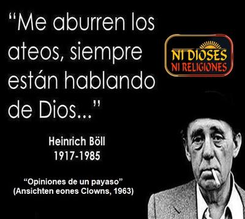

Una de las frases favoritas que los creyentes utilizan para intentar desacreditar a los ateos es esta: «Me aburren los ateos, siempre están hablando de Dios.» Generalmente se presenta sin contexto, como si fuera una observación profunda e irrefutable. Es atribuida al escritor alemán Heinrich Theodor Böll (1917–1985), ganador del Premio Nobel de Literatura en 1972, y representante del movimiento literario germánico de posguerra conocido como «literatura de escombros». Pues bien: sí, es auténtica. La frase aparece en su novela «Opiniones de un payaso» (Ansichten eines Clowns, 1963)[1], siendo en realidad parte de un diálogo más amplio:
«Los católicos me ponen nervioso –dije–, porque juegan sucio.¿Y los protestantes? –preguntó riendo–.Me irritan con su manoseo de las conciencias.¿Y los ateos? –seguía riéndose–.Me aburren, porque siempre hablan de Dios.»


Pero el problema no es la frase en sí, sino el uso distorsionado que hacen de ella los creyentes. Pretenden dar a entender que, si hablamos de «Dios», es porque en el fondo creemos en él. Es una forma de descalificar al ateo mediante una falacia de intencionalidad: «Si lo niegas tanto, es porque te importa… y si te importa, es porque existe.» Una tontería lógica de proporciones bíblicas.
Pero entonces, ¿por qué los ateos hablamos tanto de «Dios»? —Como ya se ha explicado abundantemente, los ateos hablamos de «Dios» por la misma razón que los médicos hablan del cáncer: no porque lo adoren, sino porque causa daño —y en este caso, no porque exista (como el cáncer), sino por la persistente y abrumadora creencia de los demás en él. En efecto, la generalizada creencia en «Dios» y ese cáncer cultural que representan las religiones sí existen, y sí afectan la vida social, política, educativa y moral de la humanidad. O sea, hablamos de «Dios» porque nos hastía la cantidad de creyentes que nos rodea, refiriéndose continuamente a ese personaje como absolutamente real y evidente. Como si ellos lo conocieran personalmente (y de hecho piensan que así es). Y lo hacen invadiendo el espacio público en:
Leyes basadas en dogmas religiosos.
Escuelas públicas que enseñan creacionismo.
Niños adoctrinados desde la cuna.
Mujeres sin derechos, porque así «lo manda Dios».
Ateos y librepensadores atacados y hasta perseguidos porque según la Biblia, «Dice el necio en su corazón: No hay Dios.» (Salmo 14:1)
Ciencia bloqueada porque contradice los libros sagrados.
Y aún tienen el descaro de preguntar por qué hablamos del tema. Nosotros no fuimos los que iniciamos esta conversación. Nacemos, y desde antes de poder hablar, ya nos exponen a rezos, dogmas, iglesias, cruces, curas o pastores, y amenazas de infierno. Siempre la religión nos rodea y termina imponiéndose. Nosotros sólo reaccionamos.
Y cuando lo absurdo domina el mundo, callar no es una opción. Por tanto, que los ateos hablemos de «Dios» no es fascinación, es resistencia. Como dijo el comediante y productor británico Ricky Gervais (1961-): «La palabra ‘ateo’ ni siquiera debería existir. Si la gente no siguiera inventando seres sobrenaturales, no tendríamos que seguir negándolos.»[2]
La idea de «Dios» es omnipresente no porque sea cierta, sino porque ha sido impuesta en la cultura humana. Y parte de la labor intelectual del ateísmo no es simplemente negar sin argumento, sino desmontar críticamente los fundamentos de esa creencia, que se sostiene en tradiciones, emociones y poder político, no en evidencias.
Además, incluso los creyentes sinceros, tropiezan con su idea de «Dios». Y ya que mencionamos frases célebres, también podemos citar una de Clive Staples Lewis (1898-1963), más conocido como C. S. Lewis: «Mi idea de Dios no es una idea divina. Hay que hacerla añicos una vez y otra. La hace añicos Él mismo.»[3] ¡Sí, un autor cristiano así lo dijo!
Lewis fue un locutor de radio y escritor británico reconocido por sus obras de ficción, especialmente por su saga «Las crónicas de Narnia». Pero también escribió ensayos apologéticos como «Mero cristianismo», «Los milagros» y «El problema del dolor». Por razones de este último oficio, Lewis fue también amigo cercano de J. R. R. Tolkien, el autor de «El Señor de los anillos».
Resulta que Lewis, cuando bordeaba los 60 años de edad, se casó con la escritora estadounidense Helen Joy Gresham, una mujer divorciada 17 años menor. Sin embargo, su matrimonio duró poco tiempo, debido a que Helen falleció de cáncer, lo cual provocó en él un profundo impacto que lo hizo reflexionar sobre el tema de «Dios» y su supuesta bondad infinita. Durante su período de duelo, apuntó varios pensamientos entre los cuales está este: «Si la bondad de Dios no es consecuente con el daño que nos inflige, una de dos: o Dios no es bueno, o Dios no existe; porque en la única vida que nos es dado conocer nos golpea hasta grados inimaginables, nos hace un daño que supera nuestros más negros presagios. Y si Dios es consecuente al hacernos daño, puede seguírnoslo haciendo después de muertos de una forma tan insoportable como antes».[3]
Pero al final Lewis terminó volviendo al redil del cristianismo, resignado a justificar el dolor como «misteriosos designios divinos». Sin embargo, su confesión en su momento de crisis, revela algo esencial: que el concepto de «Dios» se destruye a sí mismo porque es incoherente. No hay manera lógica de conciliar un «Dios todopoderoso», con un mundo lleno de sufrimiento injustificado. Y ese es precisamente el trabajo del pensamiento crítico: develar las contradicciones existentes en esa creencia. No por deporte intelectual, sino para desenmascarar a los farsantes que viven del engaño, y liberar a las personas del miedo y la manipulación religiosa.
¿Acaso los ateos echamos de menos a «Dios»? —¡Claro que no! El escritor y compositor inglés católico Anthony Burgess (1917-1993) escribió alguna vez: «Tanto si Dios existe como si no, le echamos mucho de menos.»[4]
Pero, ¿realmente todos «le echamos de menos»? No. Le echan de menos quienes han sido educados para depender emocionalmente de un ser invisible que actúa como padre autoritario, juez moralista y espía omnipresente. Y nunca pudieron vencer tal absurdidad. Los ateos no lo extrañamos, porque no necesitamos un amigo imaginario para darle sentido a nuestras vidas.
En resumen, nosotros no hablamos de «Dios» por obsesión. Lo hacemos, porque vivimos sitiados por una superstición institucionalizada. Si esa absurda creencia dejara de interferir en la educación, la política, la ciencia, la bioética y los derechos humanos, te garantizo que no lo volveríamos a mencionar jamás.
Así que no vengan a culparnos por hablar de «Dios». Nosotros no lo trajimos a la conversación, lo trajeron ellos. Y nuestra crítica es necesaria, porque la religión no es una idea inofensiva: tiene consecuencias reales y hasta destructivas. Si los creyentes dejaran de imponer su fe a los demás, los ateos dejaríamos de criticarla. Tan simple como eso.
Mientras tanto, seguiremos hablando de «Dios» todo lo que haga falta. Pero no porque exista, sino porque la ignorancia organizada sí existe. Y en tales circunstancias, callar es una complicidad.
[Godless Freeman]
Comentarios
Comments powered by Disqus